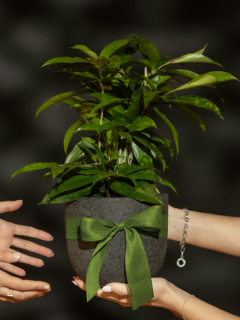
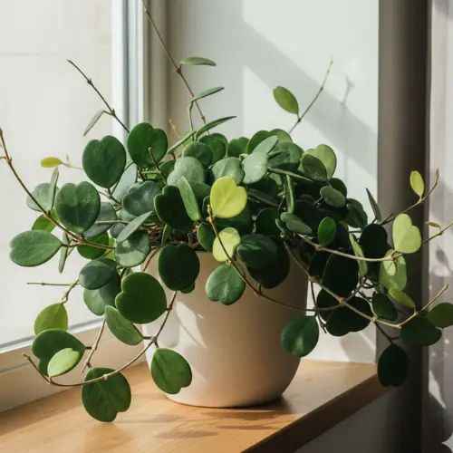
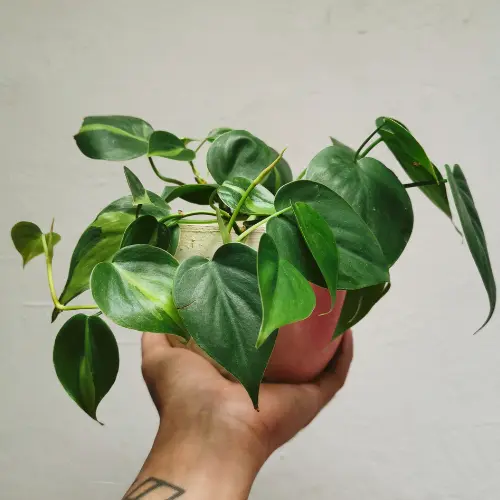
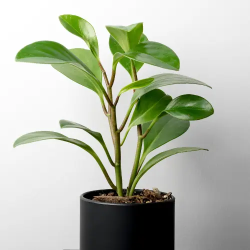
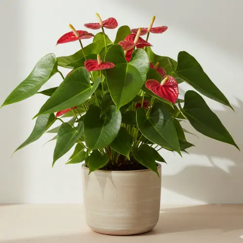

Low-Maintenance Houseplants That Make Thoughtful Gifts
09 February 2026
Flowers are beautiful — but they don’t last very long. If you’re looking for a gift that feels a bit more thoughtful, longer-lasting, and calmer, a houseplant can be a really nice alternative.
That said, gifting plants can feel risky. No one wants to give something that turns into stress or a guilt-filled responsibility. Some houseplants are honestly just not great gifts — things like fiddle leaf figs or calatheas can be picky about light, humidity, and watering, and they tend to struggle in real homes if conditions aren’t just right.
The good news is that not all houseplants are like that. Some are genuinely easy, forgiving, and well-suited to everyday living — not perfect conditions.
This guide focuses on low-maintenance houseplants that make meaningful gifts for beginners, apartment dwellers, or anyone who just wants plants that don’t feel like extra work.They fit just about any occasion — birthdays, housewarmings, Women’s Day, Valentine’s, or a quiet “thinking of you” gift — something personal that actually lasts.
What Makes a Good Gift Plant?
A good gift plant should feel exciting, not stressful. Ideally, it’s something that can settle into a new home without needing perfect conditions or constant attention.
A great gift plant is one that:
- Is easy to care for, even for beginners.
- Adapts well to typical indoor environments.
- Handles the occasional missed watering without drama.
- Still looks good without frequent trimming or adjusting.
The plants below aren’t chosen for fast growth or showy blooms. They’re chosen because they’re reliable. These are houseplants that quietly settle in, keep their shape, and grow at a steady pace. They make plant care feel approachable and forgiving — especially if someone is just starting out.
1. Hoya Kerrii

Hoya kerrii, often called the sweetheart plant because of its heart-shaped leaves, is especially popular as a gift and is one of my personal favorite plant types.
Once established, hoyas are very low maintenance and surprisingly adaptable. They prefer bright, indirect light, but they also do well in average indoor spaces and don’t need frequent watering to stay healthy.
Why it works as a gift:
- Slow growth and long lifespan.
- Thick leaves help prevent overwatering.
- Can live happily in the same pot for years.
2. Heartleaf Philodendron

If you want something soft, classic, and easy to place anywhere, heartleaf philodendron is a great choice. Its trailing vines and heart-shaped leaves give it a thoughtful feel without being dramatic or demanding attention.
This is one of those plants that settles in quietly. It adapts easily to different light levels, handles average indoor conditions well, and doesn’t mind if care isn’t perfectly consistent.
Why it works as a gift:
- Tolerates low to medium light.
- Easy to prune and shape as it grows.
- Bounces back well from missed waterings.
3. Peperomia (Baby Rubber Plant)

Peperomias are compact, tidy houseplants that work especially well in apartments and smaller spaces. Their thick leaves store moisture, which makes them more forgiving than they look and much easier to manage than many leafy plants.
They’re a great option if you want a plant that feels polished and intentional without taking up much room or demanding constant care. Peperomias tend to grow slowly, hold their shape, and stay looking neat.
Why it works as a gift:
- Compact size, perfect for shelves, desks, or windowsills.
- Thick leaves help reduce watering stress.
- Stays tidy without frequent pruning.
4. Spider Plant

Spider plants are classic for a reason. They adapt easily to different indoor environments, tolerate inconsistent care, and grow steadily without needing much attention.
Over time, spider plants produce small offshoots, which makes them feel especially generous and long-lasting as a gift. Instead of being a one-time gesture, they grow into something you can keep, share, and pass along.
Why it works as a gift:
- Very forgiving and adaptable.
- Handles indirect light well.
- Easy to share and propagate.
5. Anthurium Andraeanum

If you want something a bit more decorative, anthuriums are a fantastic choice — especially Anthurium andraeanum varieties. Their glossy, structured leaves and long-lasting blooms feel special and intentional, yet the plant itself is surprisingly resilient.
Over time, anthuriums can grow quite large. With the right spot and a little patience, they develop bold, full leaves and a fuller overall shape, making them feel like a gift that keeps evolving and delighting long after it’s given.
Why it works as a gift:
- Long-lasting blooms.
- Strong foliage that holds up well indoors.
- Grows into a fuller, more impressive plant over time.
A Calm Approach to Gifting Plants
Gifting a plant doesn’t mean gifting responsibility. It’s simply offering something that grows slowly, settles into a space, and lasts longer than most traditional gifts — without needing constant attention.
The key is choosing plants that don’t demand perfection. Low-maintenance houseplants give people room to learn, observe, and figure things out at their own pace. There’s space for missed waterings, small mistakes, and quiet wins along the way.
Whether it’s for Valentine’s Day or any other occasion, a forgiving plant can be a meaningful way to say “I thought of you” — one that keeps showing up long after the day has passed.
Final Thought
If you’re new to plant gifting, start simple. The right plant doesn’t need constant care — it just needs the right match for the space and the person.
It’s not about how exotic or rare the plant is (unless you’re gifting to a true plant expert who wants the challenge). For most people, the best gift is a plant that lasts — something that settles in, grows slowly, and doesn’t give up after two weeks.
Slow growth, steady habits, and a little patience go a long way. And honestly, a plant that sticks around and quietly reminds someone of you over time? That’s a pretty good gift.